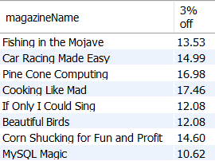
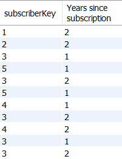
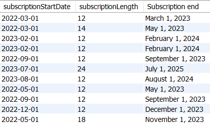
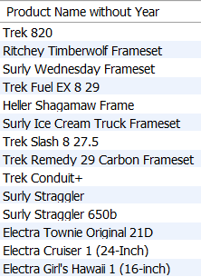
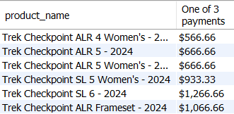

Purpose: In addition to using functions properly, the purpose of this assignment is for you to practice problem solving; analyzing what a question asks and breaking the problem into steps that lead to a solution.
Instructions: Using the magazine and bike schemas, write SQL queries in Workbench that solve each of the following scenarios or questions. Write all your queries in one tab in Workbench. Please number your queries by writing a comment above each of your queries similar to this comment:
-- Query 1
Save your SQL script with all five queries as a .sql file and submit your saved .sql file.
1. List each magazine name and magazine price with 3% off the price rounded to 2 decimal places.

2. From the subscription table, show the subscriberKey and using the date of 2024-03-15 as if it were today's date, how long in years, ROUNDED to the nearest year, has it been since each subscription started?

3. Show the subscriptionStartDate and subscriptionLength and add the subscriptionLength to the subscriptionStartDate to see the end date of each subscription. The numbers in the subscriptionLength column are given in months. Format the end date as Month name, day number with comma, and a 4 digit year.

4. We need a list of all the product names without the year at the end of the product_name string. Notice that some product_names have two years listed. Make sure you take those off as well. Order your results by product_id and limit your results to the first 14.

5. List the product name and then take the 2024 model year bikes and divide the price into 3 equal payments. Display one of the payments with a dollar sign, comma at the thousands place, and two decimal places.
